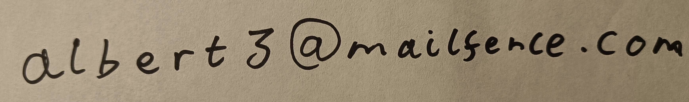

Contact
If you want to contact me, then the best way is by email,
Places I've Been
Dashes indicate period of residency, some of these years are fuzzy- 🇬🇧 : 2005 - 2023, 2025
- 🇮🇹 : 2005, 2009, 2016, 2018
- 🇦🇺 : 2008, 2010, 2012, 2014, 2019, 2022, 2024-
- 🇫🇷 : 2012, 2013, 2015, 2016
- 🇸🇬 : 2014
- 🇵🇹 : 2017
- 🇦🇹 : 2018
- 🇪🇸 : 2018, 2023
- 🇺🇸 : 2019
- 🇯🇵 : 2023
- 🇵🇱 : 2023, 2025
Languages
- English (Native)
- Japanese (~N3 ish)
- French (Pretty rusty)
- Latin (Very rusty)
- Many others at varying levels of reading only, conversation only, mix of either etc.
Likes
- Maths
- Linux (Void with i3 and SDDM on both Desktop and Laptop)
- Programming (skill level is o(1))
- Crosswords, Rebi, minipuzzles etc
- Sports (Judo + Climbing)
- Planes (Jaguar, Tornado, A330)
- Cancellations (in calculations)
Dislikes
- Circular arguments and/or Contradictions
- Running out of ink / paper
- Practicing Kanji
Web design- Long flights
- Cancellations (in plans)
Recommendations for books / reading / listening
- Mathsy stuff
- Proofs from THE BOOK (Aigner, Ziegler) ISBN:978-3-662-57264-1
- Terrence Tao's blog (also available as an RSS feed if you want that)
- How to solve it (Polya) ISBN:978-0-691-02356-5
- Literature
- Anything by Tolkien
- Essay on Criticism (Alexander Pope)
- Emily Dickinson's poetry

Above I fulfil my obligation as a USYD student to mention Whiskey, the Friendly Redfern Cat.